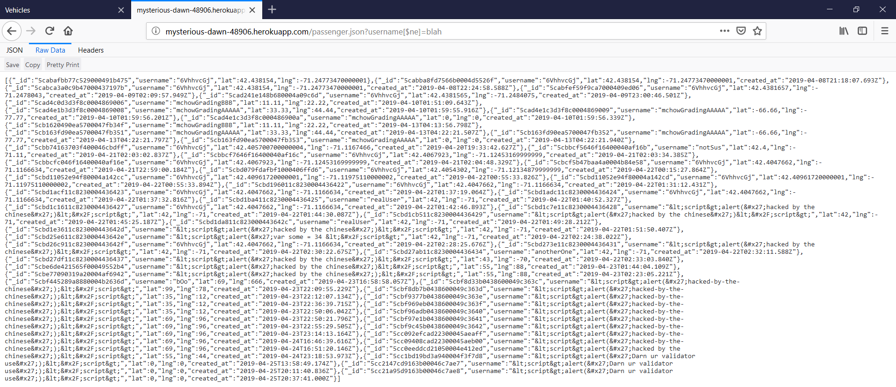

Introduction
Product: Rideshare service that stores data of passengers and drivers in order for passengers
and drivers to find each other.
Job description: Finding security and privacy vulnerabilities the rideshare service, with the
website itself and the database the website stores all the information
Methodology
- Black Box Testing:
- Use of MongoDB commands to manipulate the database to display classified information
- Injecting JavaScript code into database using cURL to HTTP POST
- Third-Party tools such as BurpSuite and OWASP's Zed Attack Proxy (refer to references)
Abstraction of Findings
Using built in commands, all the passenger data in the database is accessible
Trying to input script code that would cause the website/program to behave differently
than intended proves that the database server has some sort of serverside validation, or
ways to change the input so it no longer looks like code, and will be read as not code.
Issues Found
- Database Leak
- All passenger can be obtained using MongoDB command loopholes
- Location: /passenger.json route
- Severity: High
- Every passenger's information is accessible by anyone, could be sensitive data
- 
- Resolution: Rather than sending the input to search the database directly,
take a query that's put in a separate string and parse out unnecessary
characters, send that string to the database to search
Conclusion
Overall the program is well protected from XSS and other injection
based attacks due to good use of validation from all aspects of input
References
- Burp Suite: http://www.portswigger.net/burp/download.html
- OWASP Zed Attack Proxy: https://www.owasp.org/index.php/OWASP_Zed_Attack_Proxy_Project